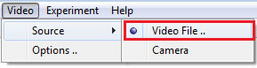
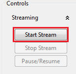
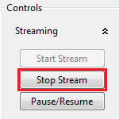

Managing Video Session
Definition
Managing a video session includes Starting, Pausing and Ending video stream.
Video stream can be started in one of two ways: Using Video File or Using webcam.
Starting video session
Using video file
Steps for loading a video file of a recorded experiment:
Prerequisits:
An Experiment needs to be created/loaded.
- Select menu item: Video-> Source -> Video file

- Click button: Start Stream
- Browse and select a video file, must be of a supported video format
Using webcam
Steps for starting webcam stream:
Prerequisits:
An Experiment needs to be created/loaded.
- Select menu item: Video-> Source -> Camera
- Click button: Start Stream

Pausing video session
Video stream can be paused/resumed at anytime (even within a tracking session), using the Pause/Resume button in the following snapshot:

Ending video session
Video stream can be stopped anytime (except within a tracking session) using the Stop Stream button in the following snapshot:
